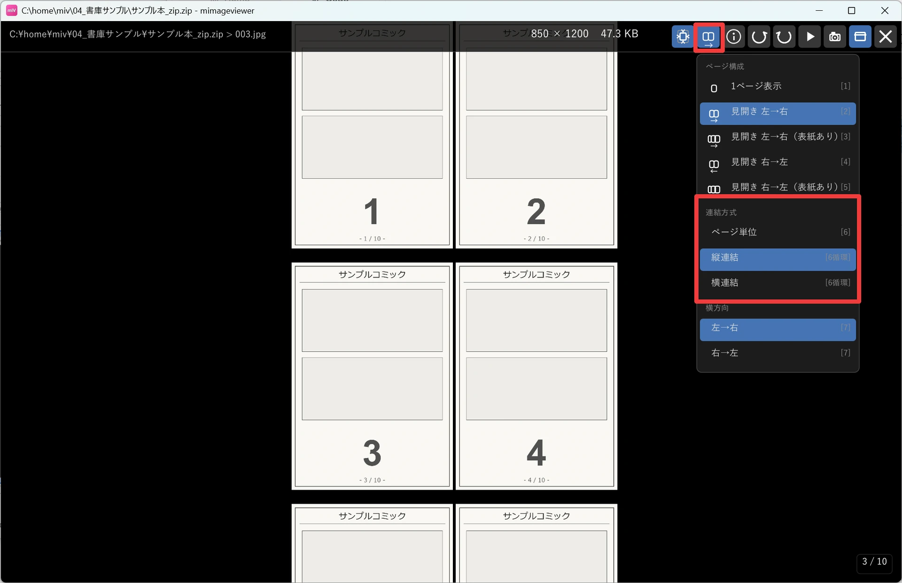
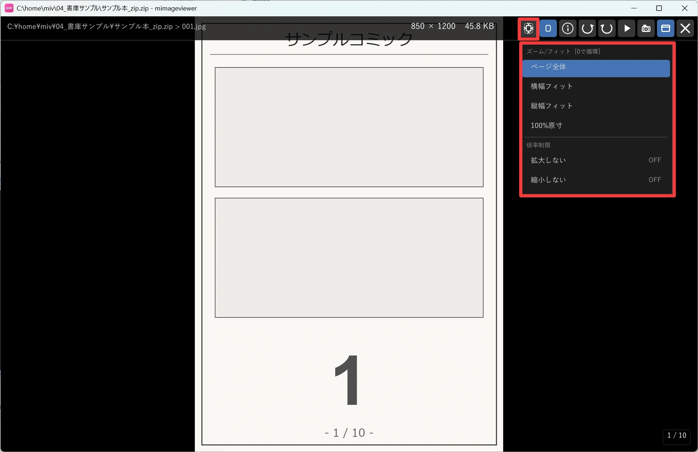
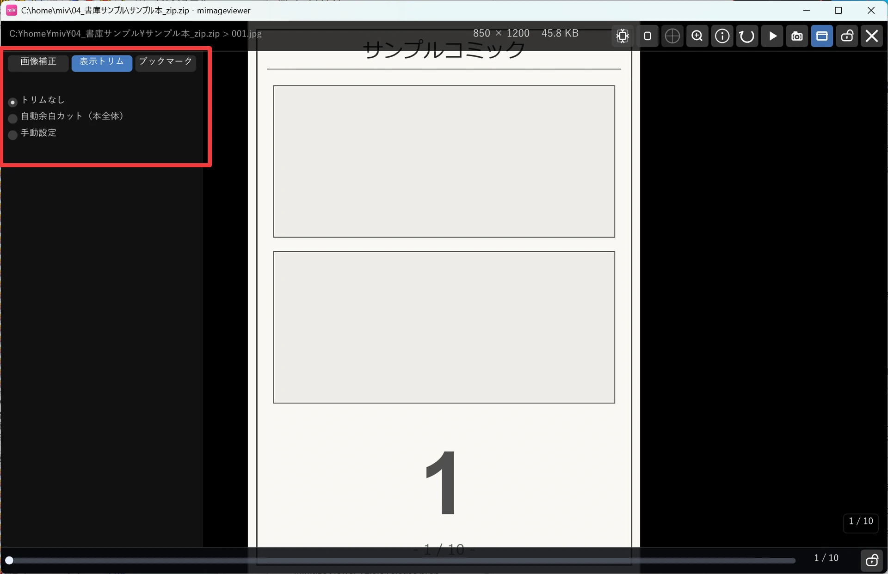
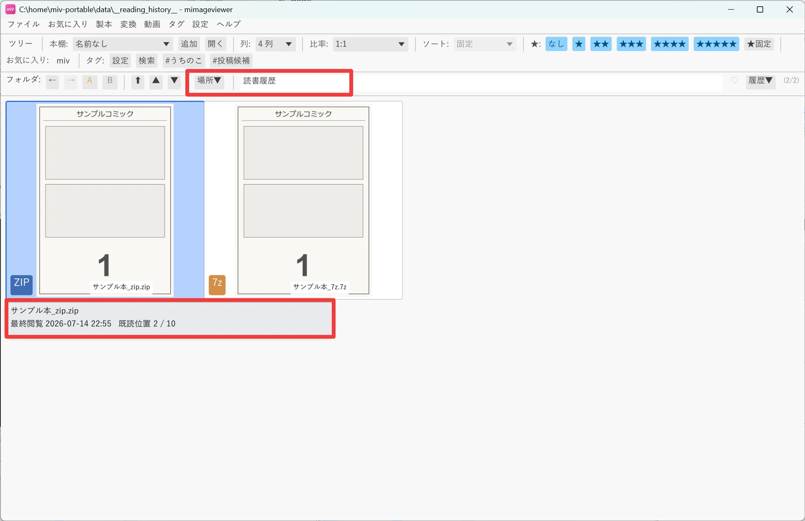

漫画を快適に読み続ける
長い作品を一気読みするときのための機能をまとめました。1 枚ずつめくるか、ページをつなげてスクロールで読むかを「連結読み」で 好みに合わせて選び、画面いっぱいに余白なく読みたいときはフィットと表示トリムを調整します。途中で閉じても、読書位置の記憶と 読書履歴が「どこまで読んだか」を覚えていてくれるので、続きからすぐに再開できます。
読み方の好みで選ぶ「連結読み」
ホバーバーの表示モードボタンから、表示方式を「ページ単位 / 縦連結 / 横連結」から選べます。 6 キーを押すと、同じ 3 方式が順に切り替わります。 1 枚ずつ表示する「ページ単位」と、ページをつなげてスクロールで読む「縦連結」「横連結」のどれが合うかは作品や好み次第なので、 切り替えて試してみてください。縦連結は上下に、横連結は左右にページを連続配置して表示し、ページの切れ目を意識せず読み進められます。
| 操作 | 説明 |
|---|---|
| 6 | ページ単位 → 縦連結 → 横連結の順に表示方式を循環 |
| ↑ / ↓ / ← / → | 連結中は、連結方向に合ったキーが通常送りの代わりにスクロールになります |
| PageUp / PageDown | 連結方向へ画面単位でスクロール |
| マウスホイール | 連結方向へスクロール |
| 左ドラッグ | 連結方向へのスクロール（パンと共通の操作） |

フィットを切り替える
ホバーバーのズーム/フィットボタンから、拡大・縮小の基準を選べます。0 キーを押すと、 「ページ全体 → 横幅フィット → 縦幅フィット → 100% 原寸」の順に循環します。 横に長いコマ割りを読むときは横幅フィット、原寸で描き込みを確認したいときは 100% 原寸、というように読み方に合わせて切り替えられます。
メニューでは現在のモードがハイライト表示されます。 メニュー下部の「拡大しない」「縮小しない」を ON にすると、自動フィット時に 100% を超えて拡大・縮小しないよう制限できます （Ctrl+ホイールなどの手動ズームには影響しません）。

表示トリムで余白を詰める
スキャン画像の周りの余白を一時的にカットして、ページの中身を画面いっぱいに表示できる機能です。 左パネルの「表示トリム」タブから設定します。
- トリムなし：元のページをそのまま表示します。
- 自動余白カット：表示中のページごとに単色の余白を自動検出してカットします。
- 本全体の設定を適用：単ページ / 見開き連動 / 見開き左右別を選び、上下左右それぞれ 0〜20% のスライダーで手動調整します。自動検出ボタンで現在ページの余白を検出し、スライダーへ反映することもできます。
「このページの個別設定を適用」にチェックを入れると、現在ページだけ個別の手動設定が優先されます（前後のページへ移動するとチェックは自動的に外れます）。

読みかけの本へすぐ戻る
本（フォルダ／ZIP／PDF）ごとに最後に見ていたページを自動的に記憶します。アプリを再起動しても保持され、 同じ本を開き直すとそのページへカーソル位置が戻ります。
本をページ表示で開く設定にしている場合、ZIP・PDF・対応アーカイブを開いたときに「1 ページ目から」開くか 「続きから」開くかは、環境設定 → ライブラリ → 履歴と復元の設定に従います。 追加のチェックを ON にすると、画像だけの通常フォルダにも同じ開き方を適用できます。
読書履歴で続きを探す
メニュー「ファイル」→「読書履歴を開く」、またはフォルダバーの「場所▼」→「読書履歴」から、 最近フルスクリーンで読んだ画像フォルダ・ZIP・PDF・対応アーカイブを一覧できます（動画は対象外です）。
- サムネイルにマウスを重ねると、場所（フルパス）・最終閲覧日時・既読位置をツールチップで確認できます。
- 詳細表示では「最終閲覧」列と「既読位置」列で一覧できます。
- 履歴から本を開いたときの「続きから / 先頭から」も、上記の履歴と復元設定に従います。
- 読書履歴から開いた本を閉じると、実フォルダではなく読書履歴の一覧に戻ります。続けて別の読みかけの本を探せます。
- 右クリックの「この本のフォルダに移動」を選ぶと、実フォルダへ移動して前後の本を探せます。

履歴の項目は右クリックから 1 件ずつ削除できます。記録の ON/OFF・保持件数・全件クリアは 環境設定 → ライブラリ → 履歴と復元で変更できます。
← チュートリアル一覧へ戻る